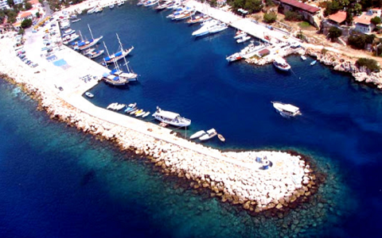
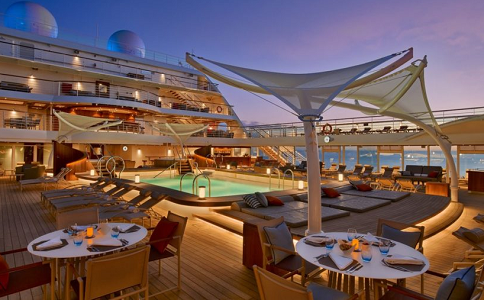
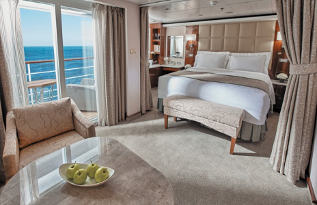
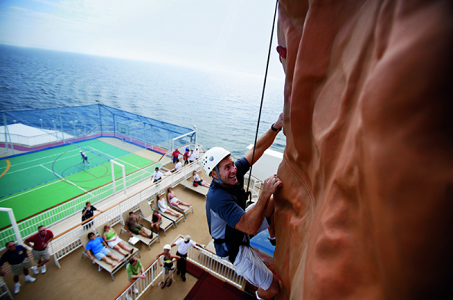

| Accueil | Nos voyages | Notre coup de coeur | Qui sommes nous? |
|---|
Notre coup de coeur du moment fut lors d'un voyage banal mais appréciable en Tunisie où nous avons eu la chance de participer à une croisière plus qu'impressionante ! En partant de Bizerte le navire démarra le trajet vers 17h30 sous le vent chaud méditérannéen. A peine partis, nous avions déjà une vue surprenante sur la côte tunisienne et son eau virant au turquoise.
La brise était agréable tout du long mais avec une vue surprenante sur le soleil couchant, rester à l'intérieur serait un pêché capital. Viens l'heure du diner, nous avions 2 options, nous restaurer, ou nous amuser, car en effet il y avait une piscine chauffée au pied des tables en extérieur, de quoi se croire au paradis !
Mais la croisière ne s'arrête pas au repos du soir! Apres une bonne nuit de someil et un réveil à la blancheur du soleil, la journée ne peut que bien commencer.
Le temps du retour, il nous était proposé un petit déjeuner d'une qualité dépassant nos attentes, entre le pain fraichement sortis du four, avec les salades de fruits ou même de quoi se faire des oeufs au bacon à l'anglaise, Et s'en suit toutes sortes d'activitées sportive, allant de l'escalade au basketball, en passant par la pétanque, oui de la pétanque sur un bateau c'est possible !
Enfin voilà, après s'être bien dépensé, le bateau nous dépose à La Goulette aux alentours de midi. J'espère vous avoir donné envie de faire la même expérience que moi, en tout cas je vous le conseille car c'est une chose qu'on oubliera jamais.